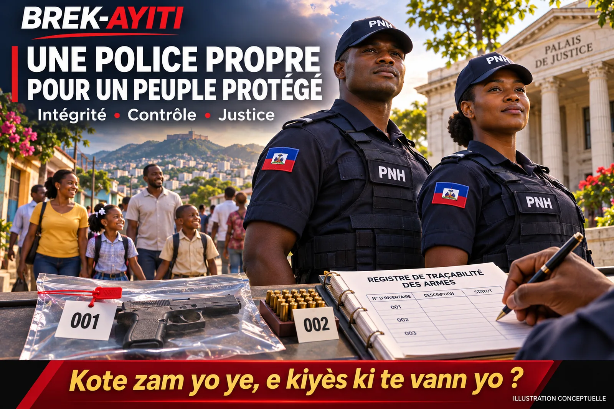

RÉFORMES ET PROPOSITIONS · 15 NOVEMBRE 2026
Une police propre pour un peuple protégé
Programme d'intégrité de la Police nationale d'Haïti

Par la rédaction de BREK-AYITI — 15 novembre 2026
Les armes de l’État ne doivent plus alimenter les gangs. Dans son rapport A/HRC/58/76 de 2025, le Haut-Commissariat des Nations unies aux droits de l’homme rapporte des détournements présumés d’armes et souligne les limites des enquêtes internes. Ces constats exigent aujourd’hui un bilan actualisé, des inventaires fiables et des responsabilités établies sur preuves.
BREK-AYITI propose un contrôle permanent, impartial et progressif de toute la Police nationale d’Haïti. Il doit s’appuyer sur l’Inspection générale, protéger les policiers intègres et les témoins, retracer chaque arme et chaque munition, et permettre des enquêtes financières et judiciaires fondées sur des preuves individuelles. Les décisions doivent être motivées, contrôlables et susceptibles de recours.
Nous demandons d’abord un bilan public du bureau de vérification depuis 2023, un inventaire réconcilié des armes, un budget transparent et des résultats publiés chaque trimestre, sans quota d’arrestations ni sanction collective.
Kote zam yo ye, e kiyès ki te vann yo ? La réponse doit atteindre tous les responsables, quel que soit leur rang.
Ce document présente une proposition de BREK-AYITI. Il ne constitue ni un programme gouvernemental adopté, ni une instruction d’enquête, ni une liste de personnes à poursuivre.
Décision proposée
BREK-AYITI propose de soutenir un contrôle progressif de l’ensemble du personnel de la Police nationale d’Haïti, adossé au mécanisme existant de l’Inspection générale, à des enquêtes judiciaires individualisées et à des garanties d’impartialité. Il faut protéger les policiers intègres, établir les responsabilités et empêcher que les armes, les fonds ou les informations de l’État alimentent les groupes armés.
L’objectif est de vérifier 100 % des effectifs selon un calendrier réaliste. Aucun pourcentage de personnes à révoquer ou à arrêter ne doit être fixé. Une mesure administrative et une poursuite pénale répondent à des règles différentes.
Résultats attendus
Un registre du personnel fiabilisé ; des inventaires d’armes et de munitions réconciliés ; des alertes traitées ; des décisions motivées et susceptibles de recours ; des dossiers pénaux exploitables ; une protection policière qui reste disponible pendant la réforme.
Question directrice
« Kote zam yo ye, e kiyès ki te vann yo ? » La recherche des armes doit conduire à l’examen des responsabilités de tous les maillons concernés, y compris les responsables hiérarchiques, les fournisseurs, les intermédiaires et les soutiens extérieurs, lorsque les preuves le justifient.
1. Fondement et portée de la proposition
Ce que les sources permettent de dire
Détournements d’armes. Le rapport du Haut-Commissaire aux droits de l’homme A/HRC/58/76, couvrant la période du 1er juillet 2024 au 28 février 2025, relaie les préoccupations du Groupe d’experts sur Haïti : contrôle insuffisant des armes et munitions détenues par la police, et détournements fréquents vers le marché illicite. Il rapporte que près de 1 000 armes à feu auraient été détournées des stocks de la police au cours des quatre années précédant 2024, et que des sources crédibles évoquent la revente d’armes saisies destinées à la destruction (§ 34) [3].
Limites des enquêtes internes. Le même rapport indique que l’IGPNH invoquait le manque de moyens et les contraintes logistiques liées à l’insécurité, et que, malgré un processus en place depuis 2023, aucun policier n’avait fait l’objet d’une enquête approfondie. Sur la période, l’IGPNH avait ouvert 23 dossiers de violations présumées des droits humains et en avait transmis 3 à la justice (§ 35). Le rapport recommande d’accélérer le vetting (§ 56 a) [3].
Le mécanisme existant. Un bureau de vérification et de contrôle du personnel a été inauguré au siège de l’IGPNH, à Delmas 2, le 1er juin 2023 [2][5]. La proposition doit donc examiner et renforcer l’existant, plutôt que créer automatiquement une structure concurrente.
Le registre du personnel. Selon HaitiLibre, une commission interne de la PNH a présenté, le 8 novembre 2025, un rapport faisant état de 6 284 promotions accordées en violation des procédures entre juin 2024 et août 2025 [6]. Ces irrégularités justifient un contrôle des dossiers (étape 1), sans présumer une implication criminelle de leurs bénéficiaires : une promotion irrégulière ne prouve pas une complicité avec un gang.
Le témoignage parlementaire canadien. Le rapport no 15 de la Chambre des communes du Canada reprend un témoignage de Diego Da Rin évoquant au moins la moitié des policiers en connivence avec des gangs [1]. Ce témoignage historique ne constitue pas une mesure vérifiée des effectifs actuels, ne permet d’identifier personne et ne peut fonder aucune décision individuelle.
Ces constats portent sur des périodes déterminées. Ils justifient un audit actualisé ; ils ne prouvent ni la culpabilité collective du personnel ni l’état exact du mécanisme au 15 novembre 2026.
État du mécanisme en novembre 2026
BREK-AYITI n’a pas retrouvé de bilan public complet du bureau de vérification : nombre de dossiers examinés, effectifs, décisions. Nous en demandons la publication. Des mesures individuelles existent : le 27 avril 2026, la PNH a annoncé que quatre policiers étaient placés à l’isolement pendant une enquête de l’IGPNH pour des manquements présumés [7]. La première exigence publique de BREK-AYITI doit donc être la publication d’un bilan agrégé du bureau depuis 2023.
Périmètre
Le programme couvrirait les agents, cadres et fonctions de soutien qui relèvent juridiquement de la PNH : ressources humaines, commandement, magasins, achats, finances, gestion des saisies et accès aux informations sensibles. Le champ exact devra être fixé par l’acte juridique compétent. Les partenaires extérieurs apporteraient un appui technique sans recevoir de pouvoir autonome de sanction ou d’arrestation.
Limites
BREK-AYITI n’aurait accès ni aux identités des témoins, ni aux dossiers individuels, ni aux données d’enquête. Son rôle serait de proposer la politique et d’exiger des résultats agrégés. Le document ne propose ni surveillance biométrique de la population, ni liste politique de suspects, ni décision automatisée de culpabilité.
Un lien familial, un lieu de résidence, une opinion, une appartenance syndicale ou une relation sociale ne suffit pas à établir une complicité. Il faut distinguer participation volontaire, corruption, négligence, erreur administrative et actes commis sous menace ; les conséquences juridiques dépendent des faits établis.
2. Gouvernance et validation juridique
Le ministère chargé de la Justice et les autorités compétentes de la PNH devraient conduire une étude juridique avant le lancement. La répartition ci-dessous est une architecture proposée, non une attribution de pouvoirs nouveaux aux institutions citées.
| Fonction | Responsabilité proposée |
|---|---|
| Pilotage institutionnel | Objectifs, financement, coordination et continuité du service ; aucune instruction politique sur la culpabilité individuelle. |
| IGPNH et bureau de vérification | Contrôle du personnel, enquêtes administratives et décisions relevant de leurs compétences légales. |
| Enquêteurs et magistrats compétents | Actes d’enquête pénale, autorisations requises, poursuites et contrôle des privations de liberté selon le droit applicable. |
| Contrôle externe | OPC et organes habilités : contrôle des garanties et traitement des plaintes dans leur mandat ; audits agrégés sans divulgation des témoins. |
| Appui spécialisé | ULCC, UCREF, CSC/CA, CNMP pour les achats : interventions uniquement dans leurs attributions et avec les habilitations nécessaires. |
Conditions à faire valider par un juriste haïtien
Identifier les textes en vigueur sur le statut de la PNH, la discipline, les pouvoirs de l’IGPNH, la procédure pénale, les interceptions, le secret bancaire, le patrimoine et la protection des données. Vérifier leurs dates d’entrée en vigueur et les éventuelles règles transitoires. Aucun article, délai de garde à vue ou pouvoir de saisie non vérifié n’est présumé ici.
Point d’attention majeur. Le nouveau Code pénal et le nouveau Code de procédure pénale, adoptés par décret en 2020 puis modifiés en 2025, devaient entrer en vigueur le 24 décembre 2025 [8]. Le PNUD a annoncé, le 16 juillet 2026, l’entrée en vigueur des nouveaux codes pour janvier 2027 [11]. Avant toute mise en œuvre, les autorités devront vérifier au Moniteur la date juridiquement applicable, les dispositions transitoires et les règles régissant chaque procédure. Le programme appliquera, pour chaque acte et chaque dossier, les dispositions effectivement en vigueur et les règles transitoires pertinentes.
Pour chaque mesure, préciser l’autorité qui décide, les motifs recevables, le niveau de preuve requis, la notification, la durée, le réexamen, les voies de recours et la conservation des pièces. Les pouvoirs manquants exigent un instrument juridique approprié ; un protocole interne ne suffit pas à créer un pouvoir coercitif.
Vérifier les vérificateurs
Contrôler les antécédents professionnels et conflits d’intérêts des enquêteurs ; prévoir déport, rotation encadrée et audit de leurs accès. Interdire qu’un responsable enquête seul sur sa propre unité ou qu’il puisse supprimer un dossier. Séparer collecte, analyse, décision et examen du recours.
3. Circuit de vérification et de décision
Étape 1 — Fiabiliser le registre
Réconcilier les dossiers RH, affectations, grades et paiements. Attribuer un identifiant administratif stable ; corriger les doublons et les absences documentaires après échange avec l’agent. Intégrer les conclusions de la commission de novembre 2025 sur les promotions irrégulières [6]. La perte d’un document dans un contexte de violence doit déclencher une régularisation, pas une présomption de crime.
Étape 2 — Recevoir et qualifier les alertes
Chaque signalement reçoit une référence, une date, une catégorie et un responsable de traitement. Distinguer observation directe, document, information indirecte et rumeur. Une plainte anonyme peut ouvrir des vérifications, mais ne suffit pas seule à une décision défavorable. Des publications qui recopient une même source ne constituent pas des confirmations indépendantes.
Étape 3 — Mener un examen individualisé
Confronter les éléments aux registres disponibles, entendre l’agent et vérifier les explications. Les demandes bancaires, perquisitions, saisies, extractions de téléphone et interceptions suivent les autorisations légales requises. Les critères de priorité reposent sur des faits et la gravité des risques, jamais sur une affiliation politique ou une origine.
Étape 4 — Orienter sans confondre les procédures
| Situation examinée | Suite envisageable selon le droit applicable |
|---|---|
| Dossier cohérent sans élément défavorable établi | Clôture motivée et réexamen périodique ; absence de garantie absolue pour l’avenir. |
| Allégation infirmée après vérification | Clôture motivée, rectification des informations inexactes et notification à l’agent, avec les mesures nécessaires pour éviter la persistance d’un soupçon injustifié. |
| Information incomplète ou contradictoire | Vérifications complémentaires et possibilité de réponse ; aucun automatisme de sanction. |
| Risque concret pour les personnes ou les preuves | Mesure conservatoire motivée et proportionnée par l’autorité habilitée, avec durée et recours. |
| Manquement professionnel établi | Procédure disciplinaire contradictoire et décision motivée. |
| Indices d’une infraction | Transmission sécurisée à l’autorité judiciaire ; enquête et éventuelle arrestation dans les conditions légales. |
Les voies administrative et pénale peuvent coexister avec une coordination légale. Une révocation ne remplace pas un procès ; une suspension ne vaut pas condamnation. Toute décision défavorable doit pouvoir être contestée devant l’instance compétente, distincte autant que le droit l’exige de l’équipe ayant instruit le dossier.
Maillon judiciaire. Les transmissions à la justice n’ont d’effet que si la chaîne pénale fonctionne. La soumission de la société civile de juillet 2026, citant un audit d’Ensemble Contre la Corruption, relève que l’ULCC et l’UCREF ont transmis 166 rapports aux tribunaux entre 2005 et 2024, pour seulement quatre jugements [9]. Le programme doit suivre chaque transmission jusqu’à sa suite judiciaire et s’articuler avec la certification des magistrats en cours au CSPJ.
4. Armes, finances et protection des personnes
Contrôle des armes et des munitions
Établir un inventaire physique contradictoire et le rapprocher des écritures. Pour chaque arme : identifiant, numéro de série lorsqu’il existe, origine, affectation, détenteur autorisé, mouvements et statut. Pour les munitions : lots, quantités reçues, distribuées, consommées, retournées et manquantes. Une différence comptable doit être documentée et expliquée ; elle ne désigne pas automatiquement son auteur.
Toute disparition présumée donne lieu à la préservation des registres et des pièces, à des vérifications individualisées et, lorsque les éléments le justifient, à une transmission judiciaire. Le programme distingue les armes manquantes, retrouvées, récupérées et légalement détruites. C’est la traduction mesurable de notre question : « Kote zam yo ye, e kiyès ki te vann yo ? »
Appliquer le double contrôle aux mouvements sensibles, documenter les remises et examiner en priorité les armes saisies, mises sous scellés ou destinées à la destruction, que le rapport A/HRC/58/76 désigne comme un point de fuite [3]. Toute expertise balistique relève du service compétent. L’étude ne doit pas diffuser l’emplacement des stocks, leurs vulnérabilités ou des informations permettant leur détournement.
Enquêtes financières et responsabilités hiérarchiques
Comparer, lorsque le droit l’autorise, revenus déclarés, patrimoine et opérations financières avec les fonctions exercées, notamment au moyen des déclarations de patrimoine prévues par la loi de 2008 pour les agents qui y sont assujettis. Une variation inexpliquée déclenche une demande d’explication et des vérifications. Vérifier les achats, livraisons, fournisseurs et paiements, en articulation avec les contrôles des marchés publics, les audits financiers et les vérifications des organes compétents, chacun dans les limites de son mandat ; examiner les actes de commandement ou omissions prouvés sans instaurer de responsabilité pénale automatique du supérieur.
Protection des témoins et des agents sous contrainte
La société civile relève une protection insuffisante des témoins [9]. Les garanties juridiques existantes doivent être inventoriées et, si nécessaire, complétées par la loi. Le programme ne doit rien promettre qui dépasse les moyens réels.
Prévoir un guichet sécurisé distinct des chaînes locales mises en cause. Expliquer les limites réelles de confidentialité et d’anonymat. Séparer coordonnées et récit dans les dossiers, limiter les accès, recueillir les besoins de protection et prévoir une orientation vers les autorités ou services habilités. Ne pas promettre une relocalisation sans dispositif et financement disponibles.
Prévoir un traitement urgent des menaces, un suivi des représailles et une assistance juridique ou psychosociale adaptée. La médiation avec un agent mis en cause ne doit pas remplacer la protection d’un témoin. Aucune amnistie ni immunité ne serait promise par une équipe administrative.
Préserver les preuves
Enregistrer provenance, auteur de la collecte, date et transferts de garde. Conserver les originaux sous contrôle, produire des copies de travail identifiées et journaliser chaque consultation. Les empreintes numériques aident à contrôler l’intégrité des fichiers ; elles ne prouvent pas à elles seules la véracité du contenu. Proscrire torture, contrainte illégale et falsification.
5. Données, déploiement et continuité du service
Un outil administratif sécurisé
Le registre proposé utiliserait des comptes nominatifs, une authentification renforcée, des droits limités par fonction, le chiffrement, des sauvegardes testées et un journal d’accès protégé contre les modifications. Séparer dossiers RH, signalements, pièces, décisions et recours ; n’afficher que ce qui est nécessaire à chaque rôle.
Définir avant la collecte la base juridique, les finalités, les champs obligatoires, les durées de conservation, les règles de rectification et les conditions de transfert. Les garanties existantes en matière de données personnelles doivent être inventoriées et, si nécessaire, complétées par la loi. Un règlement interne ne doit pas être présenté comme suffisant pour autoriser des interceptions, un accès bancaire ou toute autre mesure intrusive. Prévoir un plan de réponse aux fuites. Ne pas publier de noms sur un tableau de bord de suspects. Ne pas transmettre de données personnelles à un service d’IA grand public. Aucun score automatique ne déciderait d’une sanction ou d’une arrestation.
Calendrier indicatif à partir de la décision de lancement
| Phase | Livrable et condition de passage |
|---|---|
| Jours 1 à 30 | Diagnostic juridique et institutionnel ; bilan public du bureau existant depuis 2023 ; registre de référence ; financement initial et protocole de protection. |
| Jours 31 à 90 | Pilote limité à un périmètre validé selon les capacités, en priorité magasins d’armes et gestion des saisies ; audit des accès et des inventaires ; premières décisions et premiers recours examinés. |
| Mois 4 à 6 | Évaluation indépendante du pilote ; correction des procédures ; extension uniquement si protection et qualité sont suffisantes. |
| Mois 7 à 12 | Extension progressive avec suivi de couverture ; contrôles périodiques, bilan public agrégé et programmation annuelle. |
Ces délais sont des objectifs de projet, jamais des délais imposés aux juges. La couverture de 100 % constitue une ambition pluriannuelle si les effectifs et moyens ne permettent pas de l’atteindre la première année.
Éviter un vide sécuritaire
Planifier les relèves, la formation et les affectations afin de maintenir une protection effective des habitants, en tenant compte des opérations conjointes en cours avec la Force de répression des gangs et les forces partenaires. Un risque grave établi doit être traité immédiatement par l’autorité compétente ; la continuité du service ne justifie pas le maintien sans contrôle d’un agent dangereux. Financer aussi rémunération régulière, soins, soutien aux familles menacées et conditions de travail.
Prévoir des critères d’arrêt ou de révision du programme en cas de fuite massive, ingérence politique, représailles non maîtrisées ou accumulation de décisions annulées. Le contrôle indépendant doit pouvoir recommander des corrections sans entraver les enquêtes urgentes légalement fondées.
6. Ressources, indicateurs et maîtrise des risques
Budget à chiffrer avant engagement
Aucun montant total n’est validé à ce stade. Établir une base en gourdes avec date de prix ; indiquer le taux de change retenu pour les achats en devises. Distinguer investissement initial et dépenses récurrentes. Faire valider les coûts unitaires par devis et règles de commande publique.
Budget annuel = personnel dédié + formation + outil sécurisé + contrôles et expertises + protection et assistance + traitement des recours + audit indépendant + maintenance + provision de risque explicitée. Pour chaque poste : quantité, coût unitaire, fréquence, hypothèse, source de financement et responsable. Ne pas convertir un coût de salaire en coût complet d’enquête.
Dimensionner le travail
À titre de formule de planification, la durée d’un premier examen dépend du nombre de dossiers, du nombre d’équipes et de leur débit mensuel observé au pilote. Les enquêtes approfondies forment une charge distincte. Budgéter les dossiers complexes, les déplacements, la protection et les recours ; aucun objectif de rendement ne doit pousser à bâcler les vérifications.
| Indicateur proposé | Mesure et précaution |
|---|---|
| Couverture du registre | Agents dont le dossier de base est réconcilié / effectif de référence daté. |
| Examens achevés | Dossiers conclus avec décision motivée / dossiers ouverts ; distinguer examen initial et approfondi. |
| Traçabilité des stocks | Armes et lots contrôlés / inventaire de référence ; armes manquantes, retrouvées, récupérées et légalement détruites comptées séparément ; écarts expliqués ou transmis. |
| Respect des garanties | Délais de traitement, accès à la réponse, recours et décisions révisées ou annulées. |
| Suites pénales | Transmissions, poursuites et décisions judiciaires suivies séparément ; aucune cible de condamnations. |
| Protection et service | Alertes de représailles traitées, incidents de données et continuité des services, sous forme agrégée. |
Risques à surveiller
Captation politique : déports, contrôle externe et décisions motivées. Fausses accusations : corroboration et réponse. Fuite : accès limités et audit. Perte de capacité : relèves et formation. Blocage des poursuites : registre des transmissions et relances institutionnelles. Défiance du personnel : communication claire, défense et protection des agents intègres. Le tableau de bord trimestriel ne divulgue ni témoins, ni méthodes sensibles, ni dossiers en cours identifiables.
Conditions de mise en œuvre
La mise en œuvre, si elle est retenue par les autorités, suppose une validation juridique haïtienne, un financement, un dispositif de protection opérationnel et un mécanisme de contrôle. Aucune de ces conditions n’est présentée comme déjà acquise.
Haïti d’abord ! Haïti toujours !
— La rédaction de BREK-AYITI, Brigadiers de la Révolution Classique
Références
[1] Chambre des communes du Canada, FAAE, rapport no 15, La situation des droits de la personne en Haïti. https://www.ourcommons.ca/documentviewer/fr/44-1/FAAE/rapport-15/page-78
[2] BINUH, 2 juin 2023, La police nationale d’Haïti se dote d’un mécanisme permanent de vérification et de contrôle de son personnel. https://www.unmissions.org/fr/binuh/actualites/la-police-nationale-dhaiti-se-dote-dun-mecanisme-permanent-de-verification-et-de
[3] HCDH, A/HRC/58/76, Situation des droits de l’homme en Haïti, période du 1er juillet 2024 au 28 février 2025, § 34, 35 et 56 a. https://www.ecoi.net/en/file/local/2123656/g2504814.pdf
[4] HCDH, 2006, Rule of Law Tools for Post-Conflict States — Vetting: An Operational Framework, HR/PUB/06/5. https://www.refworld.org/policy/opguidance/ohchr/2006/42521 — cadre méthodologique, sans substitution au droit haïtien.
[5] Le Nouvelliste, 1er juin 2023, IGPNH implements verification and control bureau to purify the police institution. https://lenouvelliste.com/en/article/242633/igpnh-implements-verification-and-control-bureau-to-purify-the-police-institution
[6] HaitiLibre, 9 novembre 2025, 6,284 irregular promotions in 14 months within the Haitian National Police. https://www.haitilibre.com/en/news-46170-haiti-flash-6-284-irregular-promotions-in-14-months-within-the-haitian-national-police.html
[7] Vitamine Infos, 28 avril 2026, à propos du communiqué de la PNH du 27 avril 2026. https://vitamineinfos.blogspot.com/2026/04/several-police-officers-placed-in.html
[8] Le Nouvelliste, 19 septembre 2025, Urgent Call to Educate Stakeholders on New Penal and Criminal Procedure Codes Before They Take Effect. https://lenouvelliste.com/en/article/260079/urgent-call-to-educate-stakeholders-on-new-penal-and-criminal-procedure-codes-before-they-take-effect
[9] Haiti Human Rights Coalition (IJDH), soumission à l’EPU sur le secteur de la justice, 17 juillet 2026, traduction française. https://www.ijdh.org/wp-content/uploads/2026.07.17-UPR-Submission-re-Justice-Sector-by-HaitiHumanRightsCoalition-FR-Translation.pdf
[10] OEA, MESICIC, compilation des textes anticorruption d’Haïti. https://oas.org/en/sla/dlc/mesicic/docs/mesicic4_hti_comp.pdf
[11] PNUD, 16 juillet 2026, lancement du programme national de mise en œuvre des nouveaux Codes pénal et de procédure pénale, « qui entreront en vigueur en janvier 2027 ». https://www.undp.org/fr/node/595356